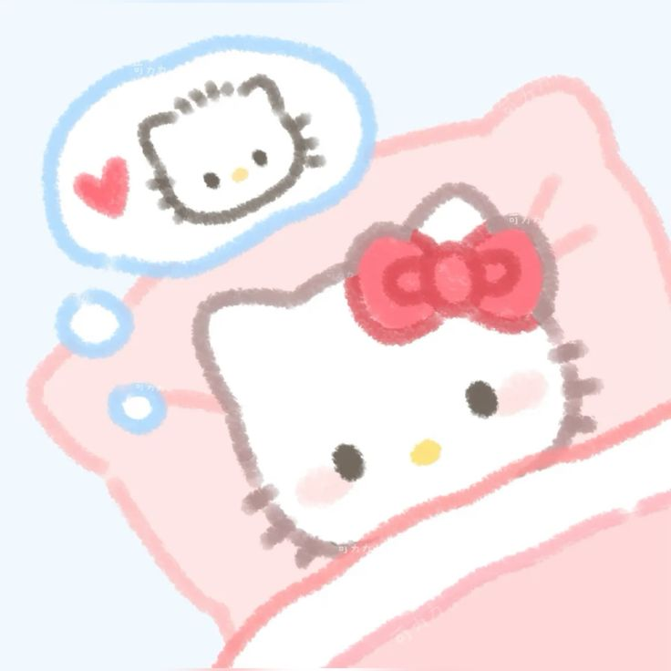

Anyway hi. Probably a bit unusual. But whatever, I was bathing and I was listening to some songs. Then I started crying.(lol) And the reason for that is quite long and complicated. And that's exactly why I wanted to write this you know. Maybe I think of our love as an art form or whatever, I just have this urge to create things when I think of you. You're the love they write scriptures about anyway so I might as well do the same y'know hehe.
You know it's just so weird. We just talked till 2 in the morning. And I still yearn for you more(lmao). And it's not that I expect any sort of reward from you. I just keep getting pulled towards you, it's kinda complicated. But that's probably what I'm here to breakdown. You know even when you firsssssssssttttt told me you love me, it felt like a dream. And even now when I think about you, you're still the same dream you were once. Many things have changed but you as a pure soul has not and I'm grateful to whoever is responsible for that(you).
